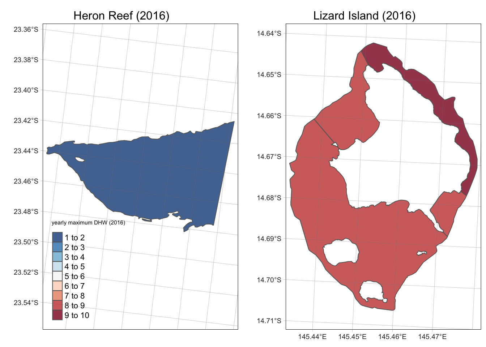

2024 mass coral bleaching event: methods
George Roff
2024-03-29
Below is an intiial analysis of the DHW from the 2024 mass coral bleaching event on the Great Barrier Reef.
i) Great Barrier Reef shp file
First, load the GBRMPA shp files for the Great Barrier Reef. For reproducibility the files are downloadable from Bozec et al 2022, and may differ from the official GBRMPA files available from the GBRMPA geoportal.
library(httr)
library(tidyverse)
library(janitor)
library(sf)
library(stars)
library(raster)
library(exactextractr)
library(tmap)
library(kableExtra)
library(reactable)
library(ggplot2)
library(terra)
library(tidyterra)
# write a function to get GBR shape file boundaries from eAtlas
get_gbr_shape <- function(crs="EPSG:20353", source="file"){
if (source=="url"){
#download from eAtlas
url <- "https://nextcloud.eatlas.org.au/s/xQ8neGxxCbgWGSd/download/TS_AIMS_NESP_Torres_Strait_Features_V1b_with_GBR_Features.zip"
destfile <- "TS_AIMS_NESP_Torres_Strait_Features_V1b_with_GBR_Features.zip"
GET(url, write_disk(destfile, overwrite = TRUE))
if (!dir.exists("unzipped_files")) {
dir.create("unzipped_files")
}
unzip("TS_AIMS_NESP_Torres_Strait_Features_V1b_with_GBR_Features.zip", exdir = "unzipped_files")
shapefile_path <- "unzipped_files/TS_AIMS_NESP_Torres_Strait_Features_V1b_with_GBR_Features.shp"
gbr_shape <- st_read(shapefile_path, quiet=TRUE) %>%
mutate(longitude = st_drop_geometry(.)$X_COORD,
latitude = st_drop_geometry(.)$Y_COORD) |>
filter(FEAT_NAME=="Reef") |>
st_set_crs(4283) |>
st_transform(20353) |>
st_make_valid() |>
clean_names() |>
dplyr::select(loc_name_s, qld_name, gbr_name, label_id, geometry, longitude, latitude) |>
mutate(gbr_name = as.factor(gbr_name)) |>
mutate(label_id = as.factor(label_id))
zones <- read.csv("/Users/rof011/GBR-coral-bleaching/data/gbr_zones.csv")
gbr_shape_output <- left_join(gbr_shape, zones, by="label_id")
return(gbr_shape)
} else if (source=="file"){
#read from disk
shapefile_path <- "/Users/rof011/GBR-coral-bleaching/data/Great_Barrier_Reef_Features.shp"
gbr_shape <- st_read(shapefile_path, quiet=TRUE) %>%
mutate(longitude = st_drop_geometry(.)$X_COORD,
latitude = st_drop_geometry(.)$Y_COORD) |>
filter(FEAT_NAME=="Reef") |>
st_set_crs(4283) |>
st_transform(20353) |>
st_make_valid() |>
clean_names() |>
dplyr::select(loc_name_s, qld_name, gbr_name, label_id, geometry, longitude, latitude,
area_ha) |>
mutate(gbr_name = as.factor(gbr_name)) |>
mutate(label_id = as.factor(label_id))
zones <- read.csv("/Users/rof011/GBR-coral-bleaching/data/gbr_zones.csv")
gbr_shape_output <- left_join(gbr_shape, zones, by="label_id")
return(gbr_shape)
}
}
### note that sf throws topology errors:
# Error in scan(text = lst[[length(lst)]], quiet = TRUE) :
# scan() expected 'a real', got 'TopologyException:'
# Error in (function (msg) :
# TopologyException: CoverageUnion cannot process incorrectly noded inputs.
gbr_shape <- get_gbr_shape(source="file") |>
mutate(id=sub("([a-zA-Z])$", "", label_id)) |> # drop multi-named sub-reef ID
group_by(gbr_name, id) |>
summarise() |>
st_make_valid()
# get distinct label_ID for each reef without sub-headings
# complex as some reefs (e.g. U/N) are catch-all "unknown reefs"
gbr_shape_label_ID <- get_gbr_shape() |>
as_tibble() |>
mutate(gbr_name=as.factor(gbr_name)) |>
mutate(id=sub("([a-zA-Z])$", "", label_id)) |>
dplyr::select(gbr_name, id) |>
distinct(gbr_name,id)
### this approach seems to give the same approx reef area as the raw data:
gbr_shape_raw <- get_gbr_shape()
# gbr_shape |> st_area() |> sum() # 28560112188 [m^2]
# gbr_shape_raw |> st_area() |> sum() # 28560118763 [m^2]
head(gbr_shape) |> kable("html") %>%
kable_styling("striped", font_size=11) %>%
scroll_box(width = "100%")| gbr_name | id | geometry |
|---|---|---|
| (Big) Broadhurst Reef (No 1) | 18-100 | POLYGON ((1848551 7867941, … |
| (Big) Broadhurst Reef (No 2) | 18-100 | POLYGON ((1845249 7862813, … |
| (Big) Stevens Reef | 20-295 | POLYGON ((2094621 7653332, … |
| (Little) Broadhurst Reef | 18-106 | POLYGON ((1846710 7851185, … |
| (Little) Stevens Reef | 20-294 | POLYGON ((2085467 7656254, … |
| Abott Reef | 19-222 | POLYGON ((2119752 7720364, … |
There are 3724 reefs, with seperate polygons for each reef label
identifier (e.g. U/N Reef has 09-361a through to 09-361f). Individual
polygons per reef ID were merged with sf::union to form
multipolygons (see example for U/N 20-299 reef which has 9 separate
label_id components).
tmap_mode("plot")
a <- tm_shape(gbr_shape_raw |> filter(grepl("20-299", label_id))) +
tm_polygons("loc_name_s", legend.show=FALSE) +
tm_graticules() +
tm_layout(main.title="U/N Reef (20-299) ", main.title.position = "center", main.title.size = 1) +
tmap_options(max.categories = 57)
b <- tm_shape(gbr_shape |> filter(grepl("20-299", id))) +
tm_polygons("aquamarine4", alpha=0.2) +
tm_layout(main.title="U/N Reef (20-299) merged", main.title.position = "center", main.title.size = 1) +
tm_graticules()
tmap_arrange(a,b, ncol=2)ii) NOAA CRW DHW data
The NOAA Coral Reef Watch (CRW) daily global 5km satellite coral bleaching Degree Heating Week (DHW) is a metric that shows accumulated heat stress.
“There is a risk of coral bleaching when the DHW value reaches 4 °C-weeks. By the time the DHW value reaches 8 °C-weeks, reef-wide coral bleaching with mortality of heat-sensitive corals is likely. If the accumulated heat stress continues to build further and exceeds a DHW value of 12 °C-weeks, multi-species mortality becomes likely”
The data is available from 01/04/1984 to present day (with a ~2 day lag for processing). Data was extracted for cells within the GBR boundaries as determined by the boundary box (plus a 1km buffer) from the GBR shape file above. DHW were extracted for all 38 years (1985-2023) between 1st January to 1st July, on the assumption that the maximum heatstress would have passed by Austral winter (01/07) in each year. For each gridcell in each year the maximum DHW value was extracted to compare the DHW among years. DHW for 2024 were extracted seperately due to an incomplete timeseries at the time of analysis:
Note: each year of data is ~480mb in size, so total download size is ~15gb and may take some time
gbr_shape_bbox <- gbr_shape |> st_transform(4326) |> st_bbox()
gbr_shape_bbox <- gbr_shape |> st_transform(4326) |> st_bbox() |> st_as_sfc() |> st_buffer(1) |> st_bbox()
# custom function for DHW conversion to spatraster
# (there are better functions to download erdapp data but this works)
get_dhw_gbr <- function(timestart, timeend, timeout=60, crs="EPSG:20353"){
gbr_dhw_url <- paste0(
"https://coastwatch.pfeg.noaa.gov/erddap/griddap/NOAA_DHW.csv?", "CRW_DHW", "%5B(", timestart,
"T12:00:00Z):1:(", timeend, "T12:00:00Z)%5D%5B(",
-24.86075, "):1:(", -10.27304, ")%5D%5B(",
141.9369 , "):1:(", 153.2032 ,
")%5D"
)
temp_file <- tempfile(fileext = ".csv")
GET(url = gbr_dhw_url, write_disk(temp_file, overwrite = TRUE), timeout(timeout))
csvdata <- read.csv(temp_file, header = TRUE, skip=1)
write_csv(csvdata, paste0("dhw_", start_date, "_raw.csv"))
print(paste0("Downloading ", start_date, " - ", end_date))
csvdata <- csvdata |>
dplyr::select(2,3,4) |>
dplyr::group_by(degrees_east, degrees_north) |>
summarise(dhw = max(Celsius.weeks))
gbr_dhw <- tidyterra::as_spatraster(csvdata, crs="EPSG:4326") |> project("EPSG:20353")
return(gbr_dhw)
}
# Loop the function across years from 1981 to 2023
gbr_dhw_data <- list()
for(year in 1985:2023) {
start_date <- paste0(year, "-01-01") # Define start and end dates for the given year
end_date <- paste0(year, "-07-01")
dhw_data <- tryCatch({ # Fetch the DHW data for the GBR
get_dhw_gbr(start_date, end_date, timeout=500)
}, error = function(e) { #Use tryCatch to handle errors or timeouts
message(paste("Error fetching data for year", year, ":", e$message))
NULL # Return NULL if there was an error
})
gbr_dhw_data[[as.character(year)]] <- dhw_data #Store the list using the year as the name
}
# Ammend 2024 data
for(year in 2024) {
start_date <- paste0(year, "-01-01") # Define start and end dates for the given year
end_date <- paste0(year, "-07-01")
dhw_data <- tryCatch({ # Fetch the DHW data for the GBR
get_dhw_gbr(start_date, end_date, timeout=500)
}, error = function(e) { #Use tryCatch to handle errors or timeouts
message(paste("Error fetching data for year", year, ":", e$message))
NULL # Return NULL if there was an error
})
gbr_dhw_data[[as.character(year)]] <- dhw_data #Store the list using the year as the name
}
# function borrowed from FAMEFMR::saveSpatRasterList:
gbr_dhw_data_list<-rapply(gbr_dhw_data_list,f=terra::wrap, classes = "SpatRaster",how="replace")
qs::qsave(gbr_dhw_data_list,"gbr_dhw_data.RData")iii) Spatial stats
As DHW is automatically calculated each day in the NOAA dataset, the
years in max DHW refer to the year of bleaching (e.g. 2016 = cumulative
heatstress from the end of 2015 and the start of 2016). For each reef
multipolygon in the gbr_shape dataset, the maximum DHW in
each year was calculated using an area-weighted approach due to
(exactextractr::exact_extract was used over
stars::st_extract | vect::extract |
raster::extract due to performance
issues]).
The exact_extract approach used below is conservative in
that for larger reef polygons (or multipolyons), it calculates the
mean value of cells that intersect the polygon weighted by
the fraction of the cell that is covered (as opposed to the
max value). Other metrics such as variance and
coefficient_of_variation may be of interest. Undefined (NA)
values are ignored in all of the named summary operations when they
occur in the value raster. When they occur in the weighting raster, they
cause the result of the summary operation to be NA.
library(reactable)
gbr_shape_dhw_list <- qs::qread("/Users/rof011/GBR-coral-bleaching/data/gbr_dhw_data.RData")
gbr_shape_dhw_list <- lapply(gbr_shape_dhw_list, function(x) terra::unwrap(x))
gbr_shape_dhw_list <- terra::rast(gbr_shape_dhw_list)
names(gbr_shape_dhw_list) <- paste0("year_", seq(1986,2024,1))
year_list <- paste0("year_", seq(1986,2024,1))
gbr_shape_dhw <- gbr_shape
for (i in year_list) {
year_col_name <- paste("dhw_max", sub("^.*_", "", i), sep="_")
gbr_shape_dhw[[year_col_name]] <- exact_extract(gbr_shape_dhw_list[[i]], progress = FALSE,
gbr_shape_dhw, fun = "mean", weights = "area")
}
head(gbr_shape_dhw) |>
kable("html") |>
kable_styling("striped", font_size=11) |>
scroll_box(width = "100%")| gbr_name | id | geometry | dhw_max_1986 | dhw_max_1987 | dhw_max_1988 | dhw_max_1989 | dhw_max_1990 | dhw_max_1991 | dhw_max_1992 | dhw_max_1993 | dhw_max_1994 | dhw_max_1995 | dhw_max_1996 | dhw_max_1997 | dhw_max_1998 | dhw_max_1999 | dhw_max_2000 | dhw_max_2001 | dhw_max_2002 | dhw_max_2003 | dhw_max_2004 | dhw_max_2005 | dhw_max_2006 | dhw_max_2007 | dhw_max_2008 | dhw_max_2009 | dhw_max_2010 | dhw_max_2011 | dhw_max_2012 | dhw_max_2013 | dhw_max_2014 | dhw_max_2015 | dhw_max_2016 | dhw_max_2017 | dhw_max_2018 | dhw_max_2019 | dhw_max_2020 | dhw_max_2021 | dhw_max_2022 | dhw_max_2023 | dhw_max_2024 |
|---|---|---|---|---|---|---|---|---|---|---|---|---|---|---|---|---|---|---|---|---|---|---|---|---|---|---|---|---|---|---|---|---|---|---|---|---|---|---|---|---|---|
| (Big) Broadhurst Reef (No 1) | 18-100 | POLYGON ((1848551 7867941, … | 0.4779795 | 6.827402 | 0.000000 | 0.1597545 | 0.7435788 | 0.0000000 | 0.000000 | 0 | 1.7756083 | 1.6970549 | 0.4418001 | 0 | 0.3921288 | 0.4099048 | 0 | 0.6378967 | 2.2812221 | 0 | 2.099609 | 0.6406564 | 0.0000000 | 0 | 0.0000000 | 0.0086903 | 0.6626197 | 0.2797973 | 0.8909236 | 0.9841175 | 0 | 1.9966893 | 2.639892 | 3.855308 | 0.0000000 | 0 | 4.845179 | 0 | 5.318794 | 1.0536289 | 3.319114 |
| (Big) Broadhurst Reef (No 2) | 18-100 | POLYGON ((1845249 7862813, … | 0.4809034 | 6.690235 | 0.000000 | 0.1626551 | 0.7322140 | 0.0000000 | 0.000000 | 0 | 1.8063999 | 1.7350723 | 0.3083107 | 0 | 0.2800516 | 0.4745746 | 0 | 0.5255354 | 1.9665437 | 0 | 2.207775 | 0.5768712 | 0.0000000 | 0 | 0.0000000 | 0.0397638 | 0.6499974 | 0.5694084 | 0.9334313 | 1.0662649 | 0 | 1.9251226 | 2.608260 | 3.985060 | 0.0000000 | 0 | 4.911906 | 0 | 5.216156 | 1.0033153 | 3.714746 |
| (Big) Stevens Reef | 20-295 | POLYGON ((2094621 7653332, … | 2.2126808 | 7.462231 | 0.000000 | 0.0000000 | 0.6870964 | 0.3540293 | 1.372475 | 0 | 0.0930394 | 1.1178683 | 0.0926058 | 0 | 1.7353671 | 0.1865064 | 0 | 0.0013572 | 7.0890689 | 0 | 4.832458 | 0.2291969 | 1.4887915 | 0 | 0.6001107 | 0.8347213 | 2.2275841 | 0.0000000 | 0.7364363 | 0.6408299 | 0 | 1.2891974 | 1.597199 | 4.002799 | 0.0894790 | 0 | 8.630629 | 0 | 5.692474 | 0.8342787 | 8.230654 |
| (Little) Broadhurst Reef | 18-106 | POLYGON ((1846710 7851185, … | 0.4927949 | 7.060939 | 0.000000 | 0.1851825 | 0.7358017 | 0.0000000 | 0.000000 | 0 | 1.7554580 | 1.9170403 | 0.6352469 | 0 | 1.0039911 | 0.5008817 | 0 | 0.5964878 | 2.9083798 | 0 | 2.061579 | 1.0029445 | 0.0133093 | 0 | 0.0000000 | 0.0000000 | 0.7555013 | 0.2112552 | 0.8949642 | 1.1583098 | 0 | 2.1319892 | 2.261860 | 4.152460 | 0.0000000 | 0 | 4.817797 | 0 | 5.554096 | 1.2604388 | 3.465622 |
| (Little) Stevens Reef | 20-294 | POLYGON ((2085467 7656254, … | 2.1869435 | 7.334218 | 0.000000 | 0.0000000 | 0.7461356 | 0.6261856 | 1.198692 | 0 | 0.0085639 | 0.9957811 | 0.1803312 | 0 | 1.9897678 | 0.2502062 | 0 | 0.0000000 | 6.7362270 | 0 | 4.782020 | 0.3121046 | 1.6231992 | 0 | 0.4489488 | 0.9118187 | 2.2421041 | 0.0000000 | 0.8632997 | 0.6447247 | 0 | 1.2262332 | 1.900885 | 3.752129 | 0.1179417 | 0 | 9.029800 | 0 | 6.001618 | 1.0063132 | 8.097749 |
| Abott Reef | 19-222 | POLYGON ((2119752 7720364, … | 0.7593529 | 5.319762 | 0.594146 | 0.1600000 | 0.3113776 | 0.0000000 | 0.000000 | 0 | 0.1686566 | 0.7345553 | 0.1500000 | 0 | 1.1293507 | 0.0000000 | 0 | 1.1302553 | 0.9077468 | 0 | 3.292808 | 0.1700677 | 0.4479577 | 0 | 0.3000000 | 2.9156933 | 0.7369853 | 0.4514952 | 0.4714453 | 0.0000000 | 0 | 0.4719019 | 2.083957 | 2.504015 | 0.0000000 | 0 | 4.460752 | 0 | 4.484212 | 0.6828330 | 9.708863 |
saveRDS(gbr_shape_dhw, "/Users/rof011/GBR-coral-bleaching/data/gbr_shape_dhw.RDS")The output is an sfc of polygons for each reef with max
DHW for each year from 1984:2016 (see below example of the max DHW
experienced at Heron Island vs Lizard Island in 2016).
1) Individual reef timeseries
The DHW dataset can be filtered to quantify the trajectories of individual reefs through time (for example Heron Island in the southern GBR and Lizard Island in the northern GBR):
tmap_mode("plot")
a <- tm_shape(gbr_shape_dhw |> filter(grepl("Lizard", gbr_name)) |> mutate(dhw_max_2016=as.numeric(dhw_max_2016)) ) +
tm_polygons(col="dhw_max_2016", palette="-RdBu", breaks= seq(1:10), alpha=0.8, legend.show=FALSE) +
tm_layout(main.title="Lizard Island (2016)", main.title.position = "center", main.title.size = 1) +
tm_graticules(lwd=0.2)
b <- tm_shape(gbr_shape_dhw |> filter(gbr_name=="Heron Reef") |> mutate(dhw_max_2016=as.numeric(dhw_max_2016))) +
tm_polygons(col="dhw_max_2016", palette="-RdBu", breaks= seq(1:10), alpha=0.8) +
tm_layout(main.title="Heron Reef (2016)", main.title.position = "center", main.title.size = 1) +
tm_graticules(lwd=0.2)
tmap_arrange(b,a, ncol=2)
As the dataset is in sf format, the output for each year
can be plotted spatially to compare the maximum DHW for adjacent reefs,
for example Heron Reef and Lizard Reef (Lizard Reef is composed of
multiple polygons based on label_ID) where the within-reef trajectories
are fit with a simple GAM model:
dhw_subset <- gbr_shape_dhw |>
filter(gbr_name=="Lizard Island Reef (North East)" | gbr_name=="Heron Reef") |>
as.data.frame() |>
dplyr::select(-id, -geometry) |>
pivot_longer(-gbr_name, names_to="year", values_to="dhw") |>
mutate(year = as.numeric(str_extract_all(year, "\\d+"))) |>
arrange(gbr_name, year)
ggplot() + theme_bw() + facet_wrap(~gbr_name, ncol=2) +
geom_smooth(data=dhw_subset, aes(x=year, y=dhw, color=gbr_name),
method = "gam", formula = y ~ s(x, bs = "cr", k = 10), show.legend = FALSE) +
geom_line(data=dhw_subset, aes(x=year, y=dhw, color=gbr_name), show.legend=FALSE) +
geom_point(data=dhw_subset, aes(year, dhw, fill=gbr_name), shape=21, size=2, show.legend=FALSE) +
theme(axis.text.x = element_text(angle = 90, vjust = 0.5, hjust=1)) +
scale_fill_manual(values=c("aquamarine2", "coral2")) +
scale_color_manual(values=c("aquamarine4", "coral4"))
2) GBR-wide timeseries
The dataset can be used to determine how the landscape has changed across multiple mass coral bleaching events since 1985 in terms of increasing frequency and intensity of heatwaves. The below example is the output of individual GAM model fits for 3724 reef polygons (label_ID) from 1985-2024.
# https://zenodo.org/records/5146061/preview/ymbozec/REEFMOD.6.4_GBR_HINDCAST_ANALYSES-v1.0.0.zip
# make a new zones for whole id
id_zones <- read.csv("/Users/rof011/GBR-coral-bleaching/data/gbr_zones.csv") |>
mutate(id=str_replace(label_id, "[a-zA-Z]$", "")) |>
dplyr::select(-label_id, -X) |>
distinct()
gbr_shape_dhw_centroid <- gbr_shape_dhw |>
st_centroid() |>
st_coordinates() |>
as.data.frame() |>
rename(lon=1, lat=2)
gbr_shape_dhw_zones_long <- gbr_shape_dhw %>%
as.data.frame() %>%
dplyr::select(-geometry) %>%
cbind(., gbr_shape_dhw_centroid) %>%
pivot_longer(cols = starts_with("dhw_max_"), names_to = "year", values_to = "dhw_max") %>%
mutate(year = str_replace(year, "dhw_max_", "")) %>%
left_join(id_zones, by="id")
ggplot() + theme_bw() +
geom_smooth(data=gbr_shape_dhw_zones_long |> na.omit() |> droplevels(),
aes(x=year, y=dhw_max, group=gbr_name),
color="darkgrey", se = FALSE, linewidth=0.05, method = "gam",
formula = y ~ s(x, bs = "cr", k = 10), show.legend = FALSE) +
theme(axis.text.x = element_text(angle = 90, vjust = 0.5, hjust=1)) Similarly, the data can be used to compare the impact of the current event (2024) with the previous mass bleaching events on the GBR (1998, 2002, 2012, 2016, 2017, 2020, 2022) in terms of maximum DHW experienced per event:
dhw_subset_bleaching_dhw <- gbr_shape_dhw |>
as.data.frame() |>
dplyr::select(-id, -geometry) |>
pivot_longer(-gbr_name, names_to="year", values_to="dhw_max") |>
mutate(year = as.numeric(str_extract_all(year, "\\d+"))) |>
arrange(gbr_name, year) |>
filter(year %in% c(1998,2002,2016,2017,2020,2022,2024)) |>
group_by(year) |>
mutate(mean_dhw_max = mean(dhw_max, na.rm=TRUE))
a <- ggplot() + theme_bw() +
ggridges::stat_density_ridges(data=dhw_subset_bleaching_dhw, alpha=0.8, scale=1.2, size=0.3,
aes(y=as.factor(year), x=dhw_max, fill=mean_dhw_max), rel_min_height=0.00001,
quantiles = c(0.5), quantile_lines = FALSE, quantile_fun = mean,
vline_color = c("white"), vline_width = 2, show.legend=FALSE) +
scale_fill_distiller(palette = "Reds", direction = 1, name="mean\nmax_DHW\nper reef") +
xlab("Maximum DHW per reef") + ylab("Mass bleaching event") +
theme(panel.grid.major.x = element_blank(), panel.grid.minor.x = element_blank())
a# b <- ggplot() + theme_bw() +
# ggridges::stat_density_ridges(data=dhw_subset_bleaching_dhw, alpha=0.8, scale=0.8, size=0.3,
# rel_min_height=0.001,
# aes(y=as.factor(year), x=dhw_max, fill=mean_dhw_max),show.legend=TRUE) +
# scale_fill_distiller(palette = "Reds", direction = 1, name="mean\nmax_DHW\nper reef") +
# xlab("Maximum DHW per reef") + ylab("") + scale_x_continuous(limits=c(0,8), oob = scales::oob_squish) +
# theme(panel.grid.major.x = element_blank(), panel.grid.minor.x = element_blank())
#
# a+b+ patchwork::plot_layout(widths = c(0.7,0.3))